1.1 Скачивание и установка Git
1.Переходим на ссылку
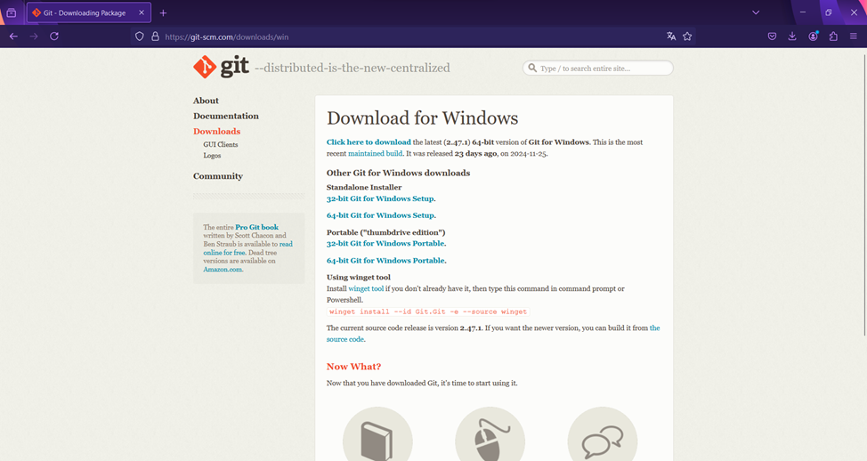2. В зависимости от версии Windows выбираем нужную версию

| Для 64-битной системы | Для 32-битной системы |
|---|---|
| 64-bit Git for Windows Setup | 32-bit Git for Windows Setup |
(Чтобы узнать версию Windows, нажмите Win + R, введите cmd и нажмите Enter, далее вставьте команду wmic OS get OSArchitecture и нажмите Enter) |
3. Запускаем установку
- После скачивания находим файл в папке "Загрузки"

- Двойным щелчком запускаем установщик Git
- При появлении предупреждения безопасности нажимаем "Да"
4. Процесс установки
- На первом экране нажимаем "Next"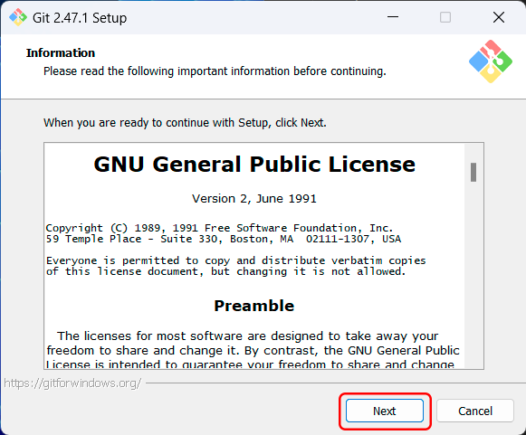
- Выбираем папку для установки (рекомендуется оставить по умолчанию)
- Обычный путь:
C:\Program Files\Git - Нажимаем "Next"

5. Выбор компонентов
Выберите следующие компоненты:

- Windows Explorer integration
- Open Git Bash here (Позволяет открывать Git Bash прямо из папки через контекстное меню)
-
Open Git GUI here (Открывает графический интерфейс Git для визуального управления)
-
Git LFS (Large File Support) (Система для работы с большими файлами в репозитории, оптимизирует хранение)
-
Associate .git* configuration files with the default text editor (Автоматически открывает конфигурационные файлы Git в текстовом редакторе)
-
Associate .sh files to be run with Bash (Позволяет запускать bash-скрипты прямо из Windows)
-
Scalar (Git add-on to manage large-scale repositories) (Инструмент для оптимизации работы с крупными репозиториями)
ВАЖНО: Дополнительно установите галочку: - Add a Git Bash Profile to Windows Terminal (Добавляет профиль Git Bash в Windows Terminal для удобного доступа к командной строке Git)

После выбора всех компонентов нажимаем "Next"
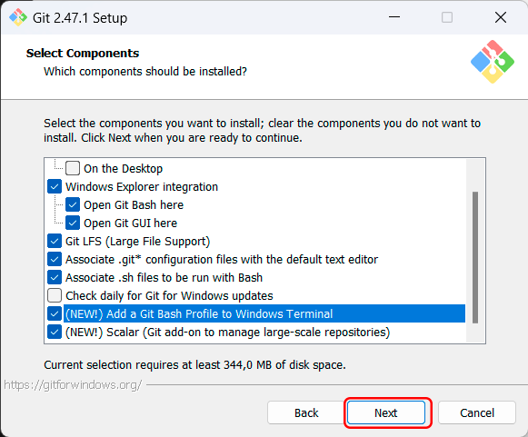 В следующем пункте так же нажимаем "Next"
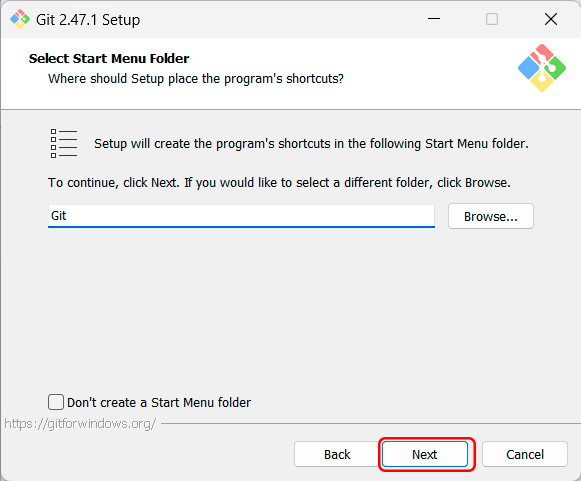
6. Выбор редактора по умолчанию
- Нажмите на выпадающее меню (стрелочка вниз)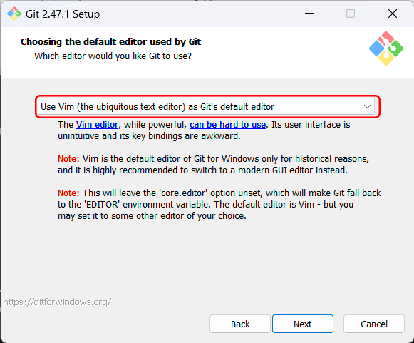
- Из списка выберите: "Use Notepad++ as Git's default editor" (Notepad++ - это мощный текстовый редактор, который удобен для работы с кодом и конфигурационными файлами Git. Он обеспечивает подсветку синтаксиса и лучшую читаемость текста по сравнению со стандартным блокнотом Windows) 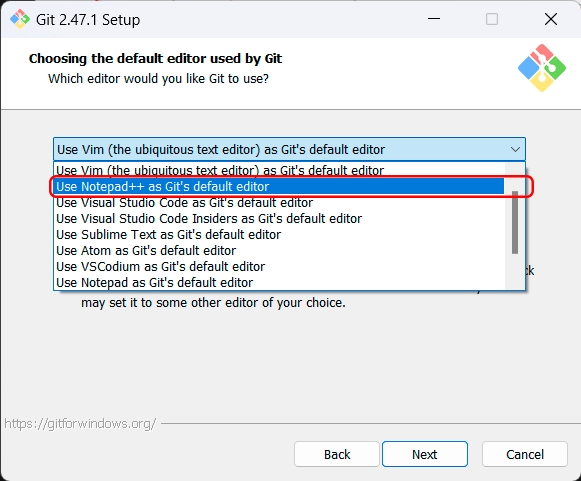
Если Notepad++ не установлен на вашем компьютере, сначала установите его с официального сайта:
После выбора редактора нажимаем "Next"
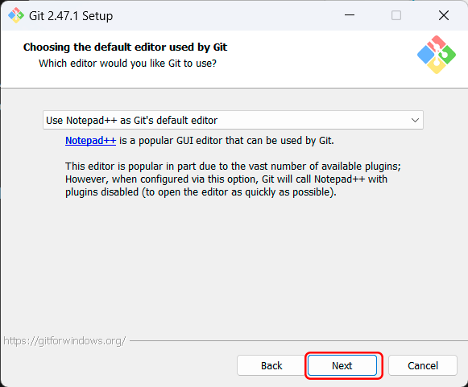
7. Настройка имени основной ветки

Доступны два варианта:
-
Let Git decide (Позволяет Git самостоятельно определять имя основной ветки. По умолчанию будет использоваться
masterдля новых репозиториев, что соответствует современным стандартам) -
Override the default branch name for new repositories (Позволяет вручную указать название основной ветки, которое будет использоваться при создании новых репозиториев. Используется, если вы хотите придерживаться определенного стандарта именования)
✅ Оставляем первый вариант "Let Git decide"
Нажимаем "Next"
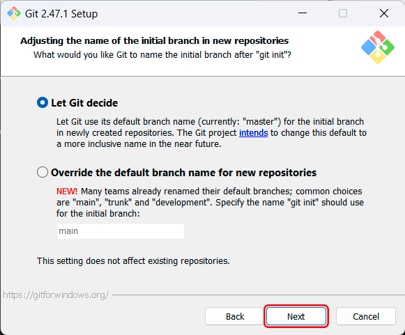
8. Настройка PATH

Доступны три варианта:
-
Use Git from Git Bash only (Git будет доступен только через Git Bash. Это самый ограниченный вариант, который не добавляет Git в системную переменную PATH)
-
Git from the command line and also from 3rd-party software (Рекомендуемый) (Добавляет Git в системную переменную PATH, что позволяет использовать Git как из командной строки Windows, так и из сторонних программ. Наиболее универсальный вариант)
-
Use Git and optional Unix tools from the Command Prompt (Добавляет Git и Unix-утилиты в PATH. Может создать конфликты с Windows-командами, имеющими аналогичные имена)
✅ Оставляем второй вариант "Git from the command line and also from 3rd-party software"
Нажимаем "Next"

9. Выбор SSH клиента

Доступны два варианта:
-
Use bundled OpenSSH (Использует встроенную версию OpenSSH, которая поставляется вместе с Git. Это рекомендуемый вариант, обеспечивающий стабильную работу и не требующий дополнительных настроек)
-
Use external OpenSSH (Использует OpenSSH, установленный в системе Windows. Подходит, если у вас уже настроен и работает внешний SSH-клиент)
✅ Оставляем первый вариант "Use bundled OpenSSH"
Нажимаем "Next"
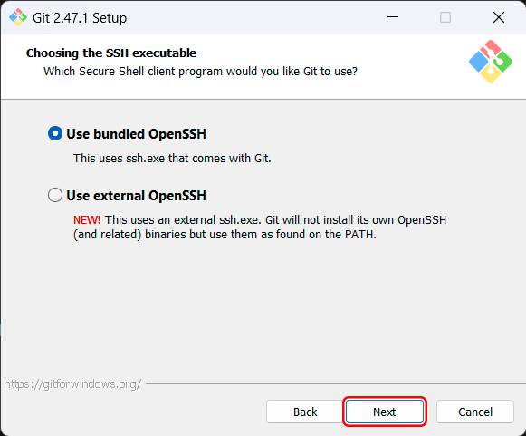
10. Выбор SSL/TLS библиотеки

Доступны два варианта:
-
Use the OpenSSL library (Использует библиотеку OpenSSL для шифрования HTTPS соединений. Это более универсальный вариант, который обеспечивает лучшую совместимость с различными серверами и сертификатами)
-
Use the native Windows Secure Channel library (Использует встроенную в Windows библиотеку для SSL/TLS соединений. Может вызывать проблемы при работе с некоторыми сертификатами)
✅ Оставляем первый вариант "Use the OpenSSL library"
Нажимаем "Next"
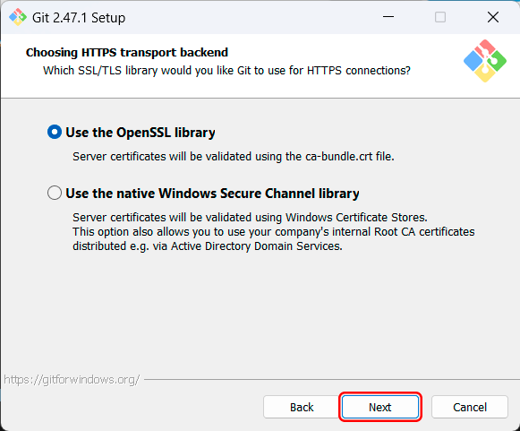
11. Настройка окончаний строк

Доступны три варианта:
-
Checkout Windows-style, commit Unix-style line endings (При загрузке файлов Git автоматически конвертирует окончания строк в Windows-стиль (CRLF), а при коммите обратно в Unix-стиль (LF). Это оптимальный вариант для работы в Windows, который обеспечивает совместимость с разными операционными системами)
-
Checkout as-is, commit Unix-style line endings (Оставляет окончания строк как есть при загрузке, но конвертирует в Unix-стиль при коммите)
-
Checkout as-is, commit as-is (Оставляет окончания строк без изменений. Может вызвать проблемы при работе в команде)
✅ Оставляем первый вариант "Checkout Windows-style, commit Unix-style line endings"
Нажимаем "Next"
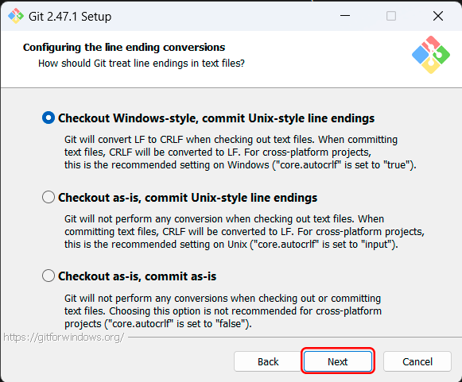
12. Выбор терминального эмулятора

Доступны два варианта:
-
Use MinTTY (the default terminal of MSYS2) (Использует MinTTY как эмулятор терминала. Преимущества: изменяемый размер окна, нестандартные выделения текста, поддержка Unicode шрифтов. Примечание: Windows консольные программы должны запускаться через 'winpty')
-
Use Windows' default console window (Использует стандартную консоль Windows (cmd.exe). Хорошо работает с Win32 консольными программами, но имеет ограниченную прокрутку, требует настройки Unicode шрифтов. В версиях до Windows 10 имеет ограничения по изменению размера окна и выделению текста)
✅ Оставляем первый вариант "Use MinTTY"
Нажимаем "Next"
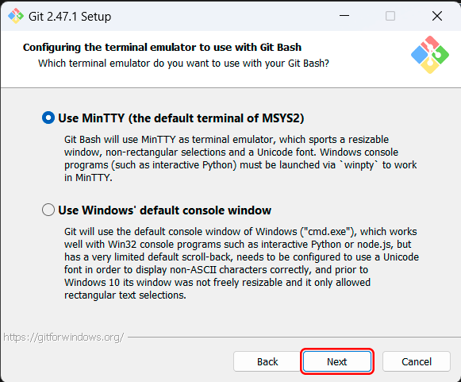
13. Настройка поведения команды 'git pull'

Доступны три варианта:
-
Fast-forward or merge (Когда возможно, выполняет fast-forward текущей ветки до скачанной ветки. Если fast-forward невозможен, создаёт коммит слияния. Это наиболее безопасный и универсальный вариант)
-
Rebase (Перебазирует текущую ветку поверх скачанной. Если локальных коммитов нет, работает как fast-forward)
-
Only ever fast-forward (Выполняет только fast-forward до скачанной ветки. Если это невозможно, операция завершится с ошибкой. Это стандартное поведение 'git pull')
✅ Оставляем первый вариант "Fast-forward or merge"
Нажимаем "Next"
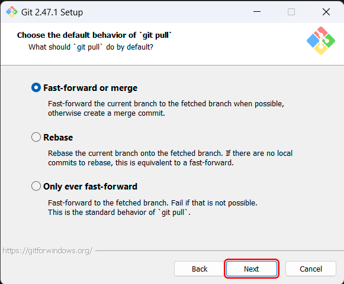
14. Выбор помощника учетных данных

Доступны два варианта:
-
Git Credential Manager (Использует кросс-платформенный менеджер учетных данных Git. Это удобный инструмент, который безопасно сохраняет ваши учетные данные и автоматически их использует при необходимости аутентификации)
-
None (Не использовать помощник учетных данных. В этом случае вам придется вводить учетные данные каждый раз при взаимодействии с удаленным репозиторием)
✅ Оставляем первый вариант "Git Credential Manager"
Нажимаем "Next"
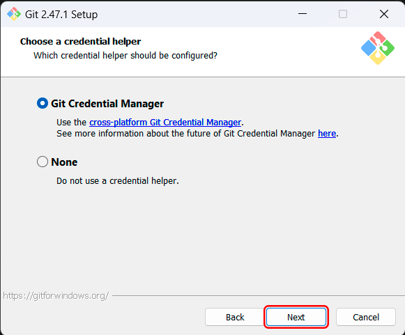
15. Настройка дополнительных опций

Доступны две опции:
-
Enable file system caching (Включает кэширование файловой системы в памяти для определенных операций. Параметр "core.fscache" устанавливается в "true". Это значительно повышает производительность Git)
-
Enable symbolic links (Включает поддержку символических ссылок. Требует разрешения "Create Symbolic Link". Эта настройка не влияет на существующие репозитории)
✅ Оставляем только первый вариант "Enable file system caching"
Нажимаем "Install"
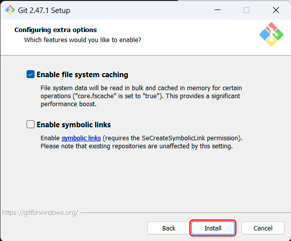
После нажатия кнопки "Install" ожидаем установки

Убираем флаг с "View Release Notes"

Установка завершена!
P.S. Для использования Git Нужно нажать правой кнопкой мыши в папке где хотите использовать git и выбрать
Open Git Bash here